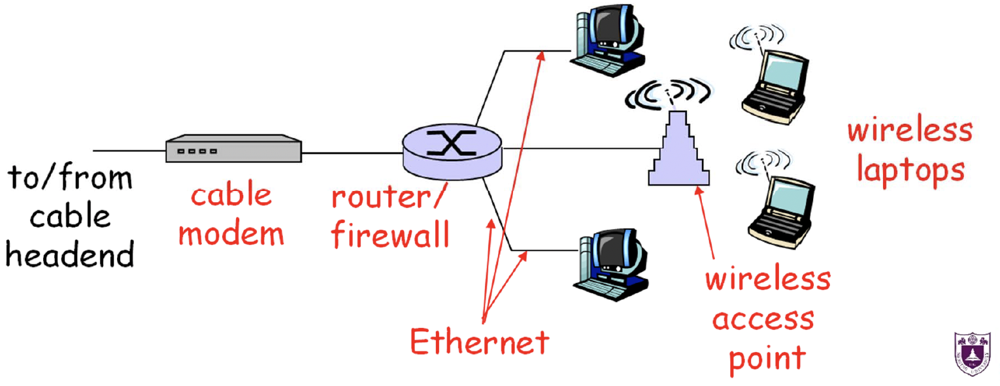
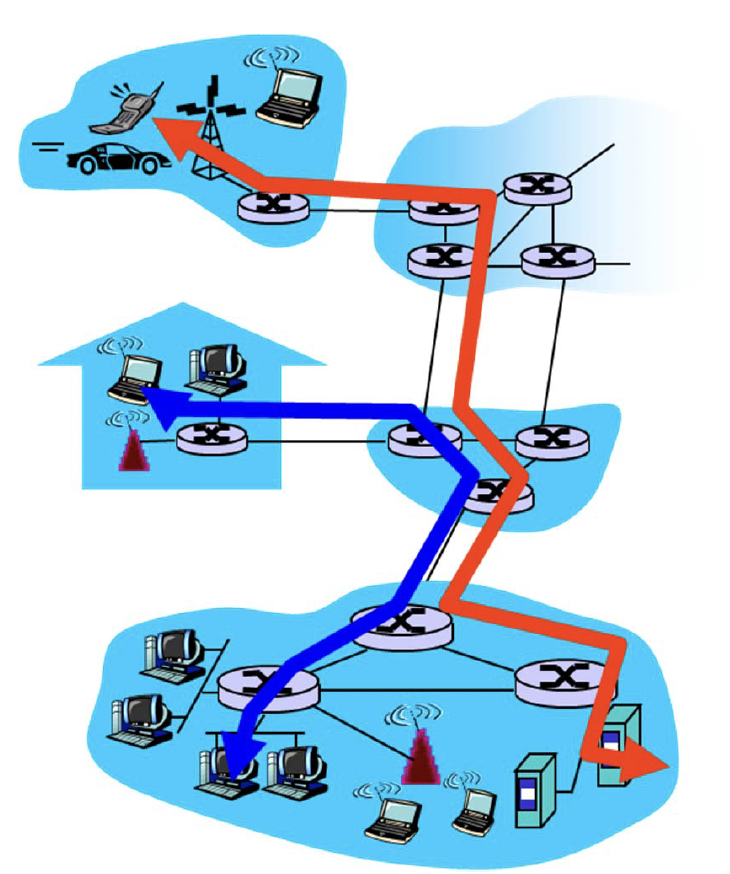
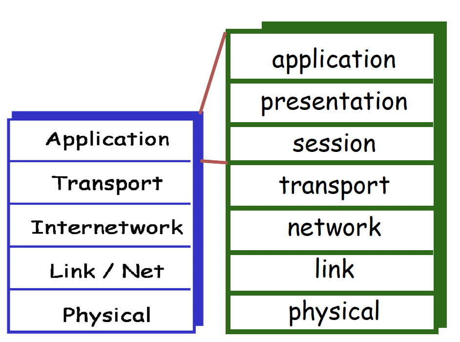
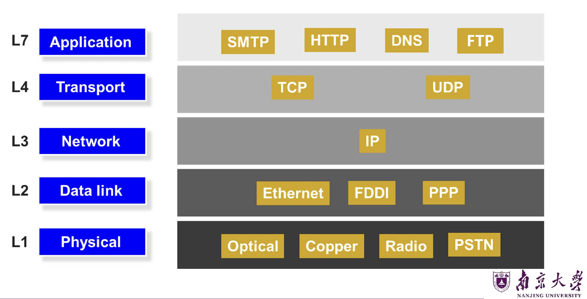
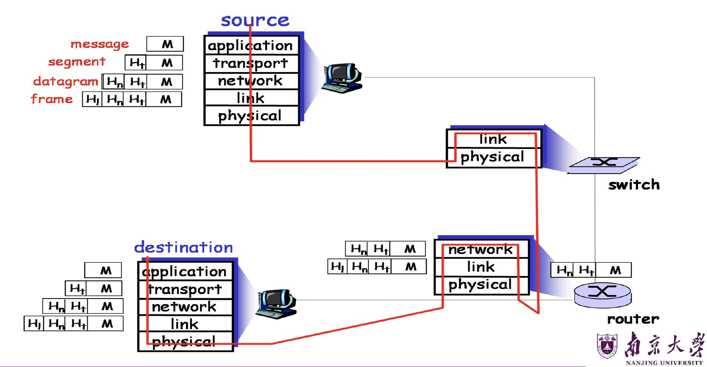
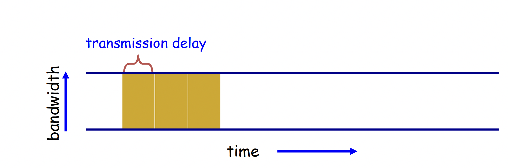
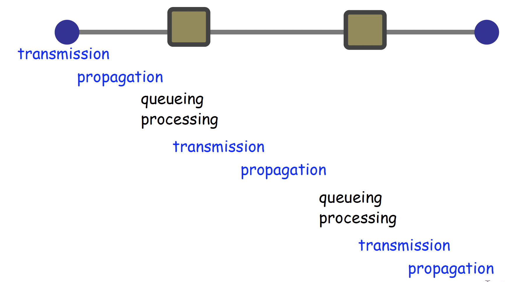

计算机网络与因特网¶
1. 课程定位与本讲范围¶
1.1 课程整体结构¶
本课程包含如下模块：
- 计算机网络和因特网
- 应用层
- 运输层
- 网络层：数据平面
- 网络层：控制平面
- 链路层和局域网
- 无线网络和移动网络
- 计算机网络中的安全
- 习题课和总复习
2. 计算机网络与互联网的基本概念¶
2.1 什么是网络（Network）¶
核心定义¶
网络可以抽象定义为：
- 由若干“节点”组成
- 节点之间通过“链路”互连
- 用于在节点之间传递“信息”
2.2 什么是因特网（Internet）¶
互联网的本质¶
互联网是：
- 一个全球互联的计算机网络系统
- 使用 TCP/IP 协议族
- 连接数十亿设备
- 本质上是一个“网络的网络（network of networks）”
3. 三个基本问题¶
-
Q1：互联网由什么组成？
-
Q2：如何接入互联网？
-
Q3：数据如何在网络中传输？
4. 互联网的组成¶
4.1 组件视角（Component View）¶
从组件角度看，互联网由三大部分组成：
1）端系统（Hosts / End Systems）¶
一般来说，Host（主机）指的是： * “连接在网络边缘、能运行网络应用的设备” * 通常有自己的网络地址（如IP），能发送/接收数据 * 既可以是客户端（手机、电脑），也可以是服务器（网站服务器、云主机）
End Systems(端系统)： * 更强调它处在网络的“端点”（网络边缘） * 端系统的主要特点是：运行网络应用（network applications），例如浏览器/微信/网盘/视频会议/游戏客户端、服务器端程序等
注意
根据上述的定义，Hosts = End system.
2）通信链路（Communication Links）¶
用于连接设备和网络设备，可采用：光纤（Fiber）、铜缆(Copper)、无线电(Radio)、卫星(Satelite)
3）路由器（Routers）¶
- 在不同物理网络之间转发分组
- 是互联网核心中的关键设备
警告
只要负责把数据包从一个网络转发到另一个网络的设备，都叫路由器。这里所说的“路由器”更加侧重于在ISP中的路由器（网络核心），重点是高速转发、稳定性、冗余并且跑各种路由协议，一般不做NAT。
而我们一般的家用路由器，位于网络边缘，是局域网通向ISP的网关，集成了:
- NAT（地址转换）：把家里多台设备共享一个公网 IP（最典型差异）
- DHCP：自动给家里设备分配内网 IP
- 防火墙/简单安全策略
- Wi-Fi 接入点（AP）
- 以太网交换机（LAN 口其实是 switch 功能）
- 有些还带 光猫/Modem（运营商一体机）
需要区分。
4.2 服务视角（Service View）¶
从服务角度看，互联网是一种通信基础设施，为应用程序提供通信服务。
支持的典型分布式应用¶
- Web、VoIP、电子邮件、在线游戏、电子商务、文件共享
提供的通信服务类型¶
- 可靠数据传输
- 尽力而为（best effort）传输
- 有保证的时延与吞吐量
4.3 协议（Protocol）与标准¶
协议¶
协议用于规定：
- 消息的格式
- 消息的发送顺序
- 消息接收后的动作
- 某些事件发生后的处理方式
网络中的所有通信活动都由协议控制。机器通信不是随意的，而是严格按协议执行。
常见网络协议：
- 应用层：HTTP、Skype
- 运输层：TCP
- 网络层：IP
- 链路层：PPP、Ethernet
互联网标准组织¶
-
IETF
- Internet Engineering Task Force
- 负责制定互联网标准
-
RFC
- Request for Comments
- 互联网标准和技术文档的重要载体
说明
在网络中，绝对可靠性很难实现，现实网络系统通常追求：高概率可靠、可检测丢失、可重传恢复，而非数学意义上的绝对保证。
5. 接入互联网¶
互联网接入可分成三部分：网络边缘（Network Edge）、接入网络（Access Networks）、网络核心（Network Core）。
5.1 网络边缘（Network Edge）¶
-
定义：网络边缘是靠近用户和应用的一侧，主要由End System/hosts构成。
-
特点：运行应用程序、发起或接收通信。
两种主要应用模型¶
客户机/服务器模型（Client/Server）¶
由客户端发起请求，服务器长期在线提供服务，例子：
- 浏览器 & Web 服务器
- 邮件客户端 & 邮件服务器
对等模型（P2P）¶
尽量少依赖专用服务器，节点之间直接交换资源，例子：Skype、BitTorrent
5.2 接入网络（Access Networks）¶
接入网络回答的是：端系统如何连接到边缘路由器？
接入网络的三大类:
- 家庭(Residential)接入网络
- 机构(Institutional)接入网络（学校、公司）
- 移动(Mobile)接入网络
家庭接入网络¶
1）拨号接入（Dial-up）：通过调制解调器接入，速率可达 56 Kbps，传统方式，速度慢
2）DSL（数字用户线）：由电话公司部署、上行速率可到 1 Mbps、下行速率可到 8 Mbps，具有从家庭到电话局的专用物理线路。
3）HFC（混合光纤同轴）：由有线电视公司部署，非对称速率：
- 下行可到 30 Mbps
- 上行约 2 Mbps
多个家庭共享到 ISP 路由器的链路。
公司 & 学校接入：局域网（LAN）¶
公司或大学中，通常通过局域网（LAN）将终端连接到边缘路由器。
一般使用以太网（Ethernet），支持速率包括：
- 10 Mbps
- 100 Mbps
- 1 Gbps
- 10 Gbps
终端通常接入到以太网交换机，再通过交换机骨干互联。
无线接入网络¶
无线接入通过共享无线信道（基站 or “接入点”）将端系统连接到路由器，通常通过：
1）无线局域网（WLAN）
- 802.11b/g，即 WiFi
- 典型速率：11 Mbps / 54 Mbps
2）广域无线接入
- 由电信运营商提供
- 覆盖范围可达几十公里
- 速率约 1~10 Mbps
- 典型技术：3G、4G、LTE、WiMax
5.3 网络核心（Network Core）¶
网络核心是由路由器构成的网络架构，关注数据如何在网络中传输。
有两种交换模式：
- 电路交换：每次交换分配专用线路。
- 分组交换：主机将应用层分割成数据包，通过链路将数据包从路由器转发到路由器。
概念辨析
- 属于网络边缘的是：笔记本、手机、智能家居、服务器
- 属于接入网络的是：双绞线、同轴电缆、无线路由器
- 属于网络核心的是：路由器、交换机
6. 物理介质（Physical Media）¶
6.1 基本概念¶
bit: 在发送端和接收端之间传播的基本信息单位
physical link: 发送器与接收器之间的实际物理连接
两大类物理介质¶
1）导引型介质（Guided Media）
信号沿着固体介质传播，例如：双绞线、同轴电缆、光纤。
-
双绞线：两根绝缘铜线缠绕组成，常用于以太网。典型类别有：
- Cat5：100 Mbps / 1 Gbps
- Cat6：10 Gbps
-
同轴电缆：两层同心铜导体，双向传输，支持宽带、多信道
- 光纤：使用玻璃纤维传输光脉冲，每个脉冲代表一个 bit，可达几十到上百 Gbps。优点：高速、低误码率、中继器间距大、抗电磁干扰
2）非导引型介质（Unguided Media）
信号自由传播，例如：无线电。
无线电使用电磁频谱传输，不需要实体导线，可双向通信，但是易受环境影响。
常见的无线链路类型：地面微波、无线 LAN（WiFi）、广域蜂窝通信、卫星通信
6.2 现代家庭网络示例¶
家庭网络常见组件包括：
- DSL 或 cable modem
- Router / Firewall / NAT
- Ethernet switch
- Wireless access point

7. 网络核心与数据交换方式¶
7.1 网络核心（Network Core）¶
定义：网络核心是由互联路由器组成的网状结构
核心问题：数据如何穿过网络核心？
- 电路交换（Circuit Switching）
- 分组交换（Packet Switching）
- 虚电路（Virtual Circuit）
终端与网络通过交换设备连接，而不是彼此直接相连。这样做的好处是：
- 支持大规模扩展
- 若 \(N\) 个节点两两直连，需要约 \(N^2\) 条链路，代价过高
7.2 电路交换（Circuit Switching）¶
基本机制:
- 源节点向目的节点发送资源预约请求
- 交换设备进行接纳控制
- 若通过，则建立专用电路
- 数据沿该专用电路传输
- 通信结束后拆除电路
特征：每条连接占用专用资源；性能可预测；一旦建立，交换简单快速。
优点：性能稳定、可预测；时延抖动小；对实时业务友好
缺点：建立和拆除电路复杂；专用资源浪费；对突发业务效率低；建立连接本身增加时延；交换机故障会导致相关电路失效。
拓展
电路交换很适合光交换机。一般光交换机只做全光交换（因为光电交换从高速信号转化为低速信号会产生大量的发热，且电的速度实在是太慢），非常适合end to end.
7.3 分组交换（Packet Switching）¶
基本机制：
- 主机把应用层消息切分成分组（packets）
- 每个分组携带目的地址
- 路由器逐跳转发
- 分组在每一跳采用存储-转发（store-and-forward）方式前进
特征：每个分组独立处理、可共享网络资源、通过缓冲区吸收瞬时拥塞
优点：资源利用率高、实现较简单、具有更强鲁棒性、可绕过故障路径
缺点：性能不可预测、会产生排队时延、缓冲区满时会丢包、需要拥塞控制和缓冲管理
拓展
分组交换很适合全电交换机。
7.5 拥塞、排队与丢失¶
资源竞争（Resource Contention）¶
当多个流同时争用同一输出链路时，总需求可能超过可用资源。
拥塞（Congestion）¶
表现为：分组在队列中等待；队列过长时可能溢出；从而发生丢包。
7.6 统计多路复用（Statistical Multiplexing）¶
定义：链路带宽采用“按需共享”的方式在多个用户之间分配。
思想：
- 不为每个用户固定保留资源
- 依赖“不是所有用户都会同时活跃”这一事实
- 在多数时候可支持比固定分配更多的用户
代价：
- 性能不可预测
- 极端情况下会发生拥塞
例子
假设链路速率 10 Mbps，每个用户需求 1 Mbps，每个用户只有 10% 时间活跃。
若用电路交换：最多支持 10 个用户。
若用统计多路复用：可支持约 35 个用户，且有99.96%的概率每位用户仍可得到足够带宽。
7.7 虚电路（Virtual Circuit）¶
定义：虚电路可以看成是电路交换 + 分组交换的结合。
特征：
- 路径预先固定
- 数据仍以分组形式传输，仍需拥塞控制
- 资源共享，可能保留一定资源
- 需要建立和拆除连接

7.8 三种交换方式比较¶
| 维度 | 电路交换 | 数据报分组交换 | 虚电路分组交换 |
|---|---|---|---|
| 传输通路 | 专用 | 非专用 | 非专用 |
| 传输方式 | 连续传输 | 分组传输 | 分组传输 |
| 带宽使用 | 固定 | 动态 | 动态 |
| 路由 | 固定 | 动态 | 固定 |
| 时延特点 | 只有呼叫建立时延 | 分组传输有时延 | 呼叫建立时延+分组传输时延 |
| 扩展性 | 差（接入用户有上限） | 好（用户数量可动态扩充） | 较好（用户数量可动态扩充，有拥塞控制保证服务质量） |
8. 分层思想与协议体系¶
8.1 为什么要分层（Layering）¶
网络系统非常复杂，包含：主机、路由器、多种链路、应用、协议、硬件与软件。
因此需要一种清晰的组织方法。
分层的作用：
- 给复杂系统建立明确结构
- 便于识别各部分功能及相互关系
- 提高模块化程度
- 便于维护与升级
- 某层实现改变时，尽量不影响其他层
9. OSI 参考模型¶
OSI 模型简介¶
OSI 由 ISO 提出，是一个七层模型。然而推出较晚，未成为实际主流，现实中 TCP/IP 更成功
OSI 七层及功能¶
1）物理层（Physical Layer）¶
- 在链路上传输 bit
- 规定机械、电气、光学、接口特性，负责链路的建立、维持、撤销
量纲辨析
物理层速率一定是b(bit)，应用层的速率才是（Byte）
2）数据链路层（Data Link Layer）¶
- 将 bit 组织成帧（frame）
- 在直接相连节点间传输帧
- 链路管理、差错检测、重传控制、介质访问控制、流量控制
3）网络层（Network Layer）¶
- 跨多个链路、多个网络传输分组
- 大规模地址体系
- 路由选择
- 转发
- 拥塞控制
- 若为面向连接网络，还涉及连接建立、维护、释放
4）运输层（Transport Layer）¶
- 端系统之间的进程到进程通信
- 端到端数据传输
- 可靠传输、顺序保证、无重复、无丢失
- 连接管理
5）会话层（Session Layer）¶
- 应用之间对话控制、会话管理、检查点与恢复
6）表示层（Presentation Layer）¶
- 数据格式转换
- 编码、压缩、加密
- 机器无关表示
7）应用层（Application Layer）¶
- 用于为应用访问网络环境提供接口
INF0
会话层、表示层的很多功能在现实 TCP/IP 中通常并入应用层。
10. TCP/IP 协议体系¶
TCP/IP 五层结构¶
应用层、运输层、网络层（Internetwork）、链路层、物理层
各层功能与典型协议¶
1）应用层¶
用于支持网络应用
协议：FTP、SMTP、HTTP
2）运输层¶
用于进程到进程的数据传输
协议示例：TCP、UDP
3）网络层¶
在网络中数据包的路由传输
协议：IP、路由协议
IP
网络层是唯一涉及多态转发的，所以网络层的协议一定要相同。
4）链路层¶
邻居节点之间的数据传输
协议：PPP、Ethernet
5）物理层¶
在线路上传输 bit

11. 思想：IP是沙漏腰部¶
窄腰（Narrow Waist）¶
IP 位于中间狭窄处：
- 上面可以承载多种应用层和运输层协议
- 下面可以运行在多种链路和物理介质之上
这表明：
- 任何支持 IP 的网络都能互通
- 应用与底层网络技术解耦
- 上下两侧都能自由创新
好处：网络互操作性极强、应用创新快、底层链路技术也可快速演进
代价：一旦 IP 本身要改动就很难！最典型的是，IPv4 向 IPv6 迁移困难

12. 封装（Encapsulation）与协议数据单元（PDU）¶
发送端数据下传时，每一层都会在上层数据前面添加自己的控制信息（头部）。
例如：
- 应用层消息
- 加上传输层头部 → 段（segment）
- 再加网络层头部 → 数据报（datagram）
- 再加链路层头部 → 帧（frame）
- 再通过物理层发送 bit
接收端则执行相反过程：解封装

PDU（协议数据单元）¶
不同层对其数据单元有不同称呼：
- 应用层：message
- 运输层：segment
- 网络层：datagram / packet
- 链路层：frame
- 物理层：bit
运输层头部可能包含:目的端口号、序号、差错检测码
13. 网络性能指标¶
三个核心性能指标：
- 时延（Delay）
- 丢包（Loss）
- 吞吐量（Throughput）
时延（Delay）¶
定义：一个分组从源到目的地需要多长时间。
四种组成部分：
- 传输时延（Transmission Delay）
- 传播时延（Propagation Delay）
- 排队时延（Queueing Delay）
- 处理时延（Processing Delay）
传输时延（Transmission Delay）¶
定义：把一个分组的所有比特“推入链路”需要的时间。
公式：
影响因素：
- 分组越大，传输时延越大
- 速率越高，传输时延越小

传播时延（Propagation Delay）¶
定义：一个 bit 从链路一端传播到另一端所需的时间。
公式：
影响因素：
- 距离越远，传播时延越大
- 传播速度通常接近光速但低于光速
辨析
- 高带宽链路可显著降低传输时延
- 但不能消除传播时延
- 长距离链路即使带宽很高，传播时延仍存在
排队时延（Queueing Delay）¶
定义：分组在缓冲区中等待被处理或发送的时间。
产生原因：
- 瞬时到达流量超过链路处理能力
- 出现资源竞争
- 分组必须在队列中等待
影响因素：
- 到达速率
- 流量是否突发
- 输出链路速率
特点：最不稳定、最难精确预测、通常采用统计指标描述
常用统计描述：平均排队时延、时延方差、超过某一阈值的概率
处理时延（Processing Delay）¶
定义
交换机、路由器处理一个分组所需的时间
特点：通常较小、很多场景下可视为可忽略
端到端时延（End-to-End Delay）¶
一个分组经过多个节点时，总时延为各跳：处理时延、排队时延、传输时延、传播时延的叠加。注意，这里的叠加不是简单相加，因为e2e的发送过程是流水线的！

丢包（Loss）¶
定义：发送到目的地的分组中，有多少比例在途中被丢弃。
原因：典型原因是队列缓冲区满；拥塞严重时丢包上升
吞吐量（Throughput）¶
定义：目的地主机从源主机接收数据的速率。
单链路场景下，若文件大小为 (F)，链路速率为 (R)，传输时间为 (T)，则平均吞吐量为：
在单条链路、传播时延影响较小时，平均吞吐量约等于链路速率 (R)。
端到端吞吐量与瓶颈链路¶
在多跳路径中，端到端吞吐量通常由最慢的一段链路决定，即：
这就是瓶颈链路（bottleneck link）思想。
14. 排队论基础：Little 定律¶
用于分析排队时延。
基本术语¶
-
到达过程
- 平均到达速率：A
- 峰值速率：P
-
队列平均等待时间
- (W)：waiting time
-
队列平均长度
- (L)：队列中平均分组数
Little’s Law¶
公式：
含义：队列平均长度 = 平均到达率 × 平均等待时间
由于有时更容易测量 (L)，可借助该公式推算 (W).